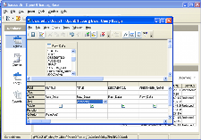

Base
Il nuovo modo per accedere ai dati
{kind=link}
BASE vi permette di manipolare database direttamente all'interno di OpenOffice.org. Create e modificate tabelle, formulari, query e report, sia usando il vostro database, sia usando il motore di database HSQL di BASE. BASE offre una scelta di Procedure Guidate, Progettazione Viste o Viste SQL per principianti, utenti intermedi e avanzati.
Gestire i vostri dati
Con BASE potete:
- Creare nuove tabelle per i vostri dati - e anche cambiarle man mano che le vostre esigenze cambiano
- Gestire indici per le tabelle per rendere l'accesso ai dati più veloce
- Visualizzare una tabella in una griglia di modifica per aggiungere, cambiare e cancellare record
- Usare il Wizard di reportistica per generare impressionanti report dai vostri dati
- Usare il Wizard Formulario per creare applicazioni di database "istantaneamente"
Usare i vostri dati
Usando BASE, potete non solo sfogliare i vostri dati ma anche:
- Eseguite ordinamenti semplici (a colonna singola) o complessi (multi-colonna)
- Visualizzare sottoinsiemi di dati con filtri semplici (1-click) o complessi (query logiche)
- Creare potenti query per mostrare i vostri dati in nuovi modi, compreso i sommari e le viste multi-tabella
- Produrre report in una vasta varietà di formati usando la procedura guidata Report
Note tecniche
BASE include una versione completa del motore di database HSQL, memorizzando i dati in file XML. Può inoltre accedere a file dBASE in maniera nativa per un semplice lavoro su database.
Per requisiti più avanzati, BASE support molti popolari database nativamente (Adabas D, ADO, Microsoft Access, MySQL), o qualsiasi database attraverso i driver standard ODBC e JDBC. Supporta inoltra qualsiasi rubrica aderente allo standard LDAP, così come i formati più comuni quali Microsoft Outlook, Microsoft Windows, e Mozilla.
Traduzione a cura dei volontari del progetto localizzazione.